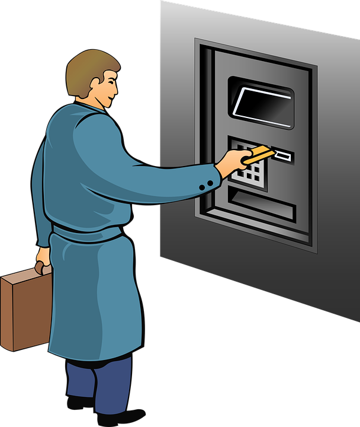

Before we start programming, we have to talk about algorithms, after all they represent the core of any program.
However, algorithms are specifically restricted to programming, in fact, we also can follow specific algorithms as human beings.
Let us take a look at a simple example.

When withdrawing money from an ATM, we have to follow a specific set of steps, for example:
- Insert your debit card.
- Choose or enter the amount of money to withdraw.
- Choose the denomination.
- Enter your PIN.
- Take your card and money.
Sounds about right, as a human being we will have no trouble following these steps.
However, a machine will have difficulties executing this algorithm, since there is at least one ambiduous step.
Step 2 tells us to choose a pre-set amount or enter the amount of cash, leaving this decision to the user.
A machine does not know which option to take, so we have to specify it further:
- Insert your debit card.
- Choose the withdraw option.
- If desired, enter a specific value, go to 5.
- Select one of the pre-set values.
- If desired, choose the denomination.
- Enter your PIN, if correct go to 8.
- Go to 6.
- Take your card and money.
As we can see, we have added a couple of weird sounding steps, especially when it comes to go to instructions.
The go to instructions allow us to skip some steps or repeat previous steps depending on a specific condition.
This way we have removed the ambiguity from the previous algorithm.
Of course, these steps are still heavily abstracted and we may need to specify them further, but we won't go there yet.
What we need to know now, machines cannot think the way humans do, unlike machines we are capable of abstract thinking.
When programming a machine however, we have to define every step at lower levels of abstractions.
Thankfully, modern programming languages work at a relatively high level, so in most cases we don't have to address the hardware directly.
So what is an algorithm in the context of Computer Science?
An algorithms is a finite, unambiguous sequence of strict, executable instructions which solve a specific problem.
Meaning, that when we encounter a problem, e.g. How do I withdraw money from an ATM, we have an abstract definition of said problem.
We then need to formulate an algorithm to solve that problem similarly how we did it before.
And then we can start translating the algorithm into a program using a programming language.
There is a lot more to algorithms and their properties, but we are here to program and not talk about dry mathematical theory, aren't we?
If you have followed the getting started guide, you have propably already written and executed you first "Hello, World!" program.
If you have not, we strongly suggest that you do it now.

There is quite a lot of information in this example, so let us try to summarize it:
- A program is written in a file, its name must be equal to the file name.
- We can import libraries, which are contained in their own files, using their names in an import instruction.
- Named elements, e.g. a program or a variable, can be referred to by theit names. In this example we first refer to the IO library to import it, then again to access the writeString operation, which we also reference by its own name.
- The main procedure is the entry point in our program, i.e. the first statement here is the first one to be executed.
- A statement is a single executable instruction with a specific task, e.g. the IO.writeString("Hello, world!") invokes the imported operation to print a string on the console.
Other statements can be used to declare variables, change their values or manipulate to flow of our program depending on specific conditions. - Statements can be complemented by expressions, which in case of MuLE cannot be used outside of statements. An expression is evaluated and yields a value.
In our case "Hello, World!" is an expression which is used to pass a string value to the writeString operation. Another example of an expression is 2 + 3 which yields 5. - Values represent data. They also have a data type, which is used to validate the correctness of our program.
In our example we invoke an operation which expects a string value, meaning that we are not allowed to pass a value with a different data type, e.g. an integer.
So if we want to print a 5 using writeString, we have to pass it as a string value, i.e. "5".
Otherwise our program will not compile. - We can define our own operations and types outside of the main procedure, which we will do it in subsequent chapters.
Comments are a very useful feature, as the name suggests, they are meant to be used to write comments for your code.
Even if you understand now, what you code is doing, if you look at it in a couple of weeks or even months, you will have to invest time to understand you own program.
If you write meaningful comments for you programs, both your future self as well as your colleagues will be very grateful.